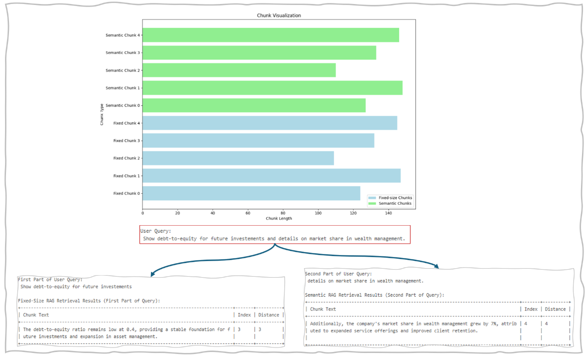

Use Cases
Customer service (Retail Industry)
In customer service chatbots, hybrid chunking can effectively retrieve information about product inquiries while ensuring that responses are contextually relevant and enriched with marketing language and details.
Investment analysis (Financial Services)
In investment analysis, hybrid chunking is employed to manage various data types, from formal financial reports to casual market commentary, ensuring thorough evaluation and relevant information extraction.
Hybrid Chunking Code
Example of Hybrid Chunking Result



Pros and Cons of Hybrid Chunking
| Pros | Cons |
|---|---|
| Improved Contextual Understanding : By combining fixed-size and semantic chunking, it enhances the model's ability to maintain context and relevance in responses. | Complex Implementation : Developing and maintaining a hybrid system can be more complicated than using a single chunking method. |
| Customizability : It allows for tailoring the chunking approach to specific use cases, optimizing performance based on the nature of the data and tasks. | Resource Consumption : It may require more computational resources, impacting performance and response times, especially with larger datasets. |
| Efficient Retrieval : The initial fixed-size chunking enables quick indexing, while semantic chunking ensures deeper comprehension during retrieval, improving response accuracy. | Potential Overhead :The dual-layer processing might introduce delays if not optimized, which could affect real-time applications. |
| Dynamic Adaptation : It enables dynamic modification of chunk boundaries based on context or specific requirements of the task. | Need for Fine-Tuning : The effectiveness of hybrid chunking often depends on careful tuning and evaluation, which can be time-consuming. |